“Hi, fluffies!”
This is how Khomka, the best expert in seeds and the mascot of the well-known self-titled brand, would address you.
For the sixth year running, “Khomka” trademark has got an award "The Best Seed of the Year" according to the Ukrainian People Award. The secret of its success is that the brand always offers its customers only high-quality selected seeds. Соняшникове чи гарбузове, звичайне або ж солоне, маленьке, велике, а для лінивих - навіть очищене!
Sunflower or pumpkin ones, ordinary or salty, small, large, and even peeled ones - especially for lazy guys:)
Though nationwide love and consumer loyalty should be always maintained. So marketing on social networks has been chosen as the most effective tool.
Who is he - our
consumer?
We started our work on the project with a thorough study of the target audience, analysis of its socio-demographic features as well as behavior on social networks.
Meet Oksana, 42 years old. She is a music teacher at a village school in Poltava region. She has a husband and adores two kids of their own
Between classes, she’s online on FB just to send her friends greeting cards from Viber, find a tasty dish recipe for dinner and take a breath after those naughty boys from 7-A class. In the evenings she likes watching TV series while peeling "Khomka" seeds. This is a special kind of meditation for Oksana.
New
strategy
Our marketing research has shown that the brand audience wants to get useful lifestyle content. But at the same time, people don’t mind being entertained and kept away from routine, at least for a moment.
• For the brand we’ve defined the archetype of “boy next door” - simple, sociable and always open to communication.
• Communication on social networks was based on storytelling method - 1st person narration - from the hamster Khomka. We turned him into a real blogger with his own unique legend. He lived an active life, did lots of sports, loved watching movies, often cooked tasty treats, traveled a lot and was a true eco-activist.
• In addition, we’ve set a specific tone of voice for Khomka: cheerful and friendly, sometimes instructive and a little bit ironic. He speaks the same language with his audience, gently calling it "fluffies" (“pukhnastyky)”.
New
content
Within developed SMM-strategy we’ve divided our content into the following sections:


 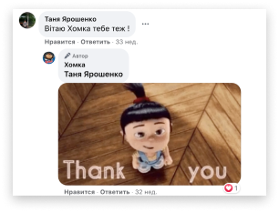
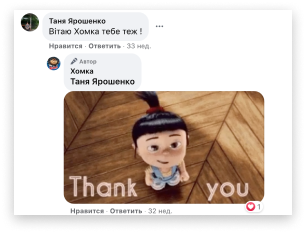

 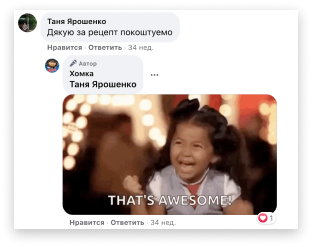
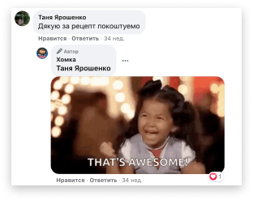


 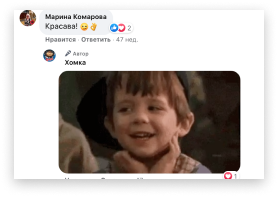
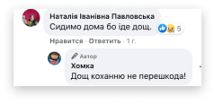
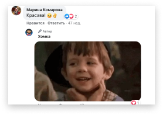
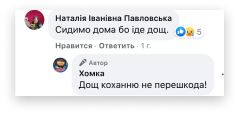


 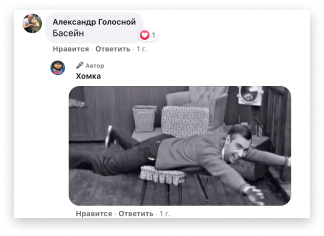
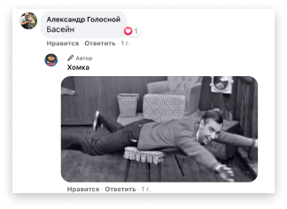


 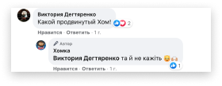
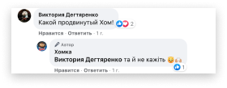